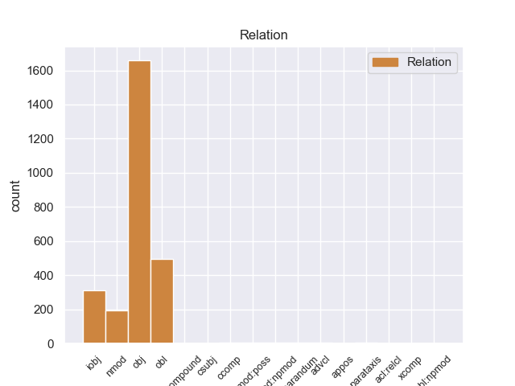
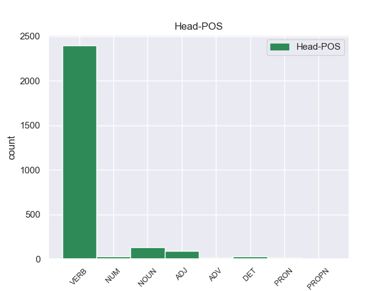
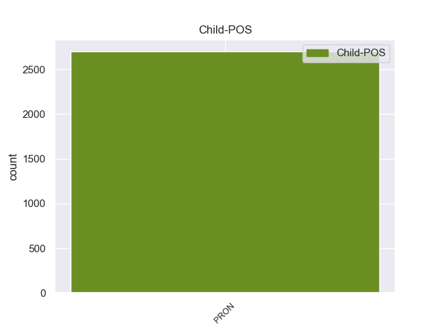

Distribution of features within this leaf



Morphosyntax Rules sorted by frequency.
- When the dependent token is the object(obj) of the head token, the Case needs to be Acc.
1 Supposedly _ _ _ _ 0 _ _ _
2 they _ _ _ _ 0 _ _ _
3 will _ _ _ _ 0 _ _ _
4 be _ _ _ _ 0 _ _ _
5 holding hold VERB VBG Tense=Pres|VerbForm=Part 0 _ _ _
6 it it PRON PRP Case=Acc|Gender=Neut|Number=Sing|Person=3|PronType=Prs 5 obj 5:obj _
7 for _ _ _ _ 0 _ _ _
8 me _ _ _ _ 0 _ _ _
9 this _ _ _ _ 0 _ _ _
10 evening _ _ _ _ 0 _ _ _
11 , _ _ _ _ 0 _ _ _
12 but _ _ _ _ 0 _ _ _
13 I _ _ _ _ 0 _ _ _
14 'm _ _ _ _ 0 _ _ _
15 sure _ _ _ _ 0 _ _ _
16 that _ _ _ _ 0 _ _ _
17 will _ _ _ _ 0 _ _ _
18 also _ _ _ _ 0 _ _ _
19 be _ _ _ _ 0 _ _ _
20 a _ _ _ _ 0 _ _ _
21 huge _ _ _ _ 0 _ _ _
22 ordeal _ _ _ _ 0 _ _ _
23 . _ _ _ _ 0 _ _ _
1 Supposedly _ _ _ _ 0 _ _ _
2 they _ _ _ _ 0 _ _ _
3 will _ _ _ _ 0 _ _ _
4 be _ _ _ _ 0 _ _ _
5 holding hold VERB VBG Tense=Pres|VerbForm=Part 0 _ _ _
6 it _ _ _ _ 0 _ _ _
7 for _ _ _ _ 0 _ _ _
8 me I PRON PRP Case=Acc|Number=Sing|Person=1|PronType=Prs 5 obl 5:obl:for _
9 this _ _ _ _ 0 _ _ _
10 evening _ _ _ _ 0 _ _ _
11 , _ _ _ _ 0 _ _ _
12 but _ _ _ _ 0 _ _ _
13 I _ _ _ _ 0 _ _ _
14 'm _ _ _ _ 0 _ _ _
15 sure _ _ _ _ 0 _ _ _
16 that _ _ _ _ 0 _ _ _
17 will _ _ _ _ 0 _ _ _
18 also _ _ _ _ 0 _ _ _
19 be _ _ _ _ 0 _ _ _
20 a _ _ _ _ 0 _ _ _
21 huge _ _ _ _ 0 _ _ _
22 ordeal _ _ _ _ 0 _ _ _
23 . _ _ _ _ 0 _ _ _
1 I _ _ _ _ 0 _ _ _
2 waited _ _ _ _ 0 _ _ _
3 about _ _ _ _ 0 _ _ _
4 20 _ _ _ _ 0 _ _ _
5 minutes _ _ _ _ 0 _ _ _
6 in _ _ _ _ 0 _ _ _
7 the _ _ _ _ 0 _ _ _
8 store _ _ _ _ 0 _ _ _
9 part _ _ _ _ 0 _ _ _
10 before _ _ _ _ 0 _ _ _
11 anyone _ _ _ _ 0 _ _ _
12 was _ _ _ _ 0 _ _ _
13 able _ _ _ _ 0 _ _ _
14 to _ _ _ _ 0 _ _ _
15 assist _ _ _ _ 0 _ _ _
16 me _ _ _ _ 0 _ _ _
17 and _ _ _ _ 0 _ _ _
18 was _ _ _ _ 0 _ _ _
19 then _ _ _ _ 0 _ _ _
20 told _ _ _ _ 0 _ _ _
21 to _ _ _ _ 0 _ _ _
22 pull _ _ _ _ 0 _ _ _
23 my _ _ _ _ 0 _ _ _
24 car _ _ _ _ 0 _ _ _
25 into _ _ _ _ 0 _ _ _
26 the _ _ _ _ 0 _ _ _
27 shop _ _ _ _ 0 _ _ _
28 ( _ _ _ _ 0 _ _ _
29 that _ _ _ _ 0 _ _ _
30 is _ _ _ _ 0 _ _ _
31 apparently _ _ _ _ 0 _ _ _
32 what _ _ _ _ 0 _ _ _
33 you _ _ _ _ 0 _ _ _
34 are _ _ _ _ 0 _ _ _
35 supposed _ _ _ _ 0 _ _ _
36 to _ _ _ _ 0 _ _ _
37 do _ _ _ _ 0 _ _ _
38 , _ _ _ _ 0 _ _ _
39 but _ _ _ _ 0 _ _ _
40 the _ _ _ _ 0 _ _ _
41 big _ _ _ _ 0 _ _ _
42 signs _ _ _ _ 0 _ _ _
43 pointing point VERB VBG VerbForm=Ger 0 _ _ _
44 you you PRON PRP Case=Acc|Person=2|PronType=Prs 43 iobj 43:iobj _
45 that _ _ _ _ 0 _ _ _
46 way _ _ _ _ 0 _ _ _
47 are _ _ _ _ 0 _ _ _
48 for _ _ _ _ 0 _ _ _
49 some _ _ _ _ 0 _ _ _
50 reason _ _ _ _ 0 _ _ _
51 kept _ _ _ _ 0 _ _ _
52 inside _ _ _ _ 0 _ _ _
53 the _ _ _ _ 0 _ _ _
54 garage _ _ _ _ 0 _ _ _
55 , _ _ _ _ 0 _ _ _
56 so _ _ _ _ 0 _ _ _
57 you _ _ _ _ 0 _ _ _
58 do _ _ _ _ 0 _ _ _
59 n't _ _ _ _ 0 _ _ _
60 see _ _ _ _ 0 _ _ _
61 them _ _ _ _ 0 _ _ _
62 drving _ _ _ _ 0 _ _ _
63 up _ _ _ _ 0 _ _ _
64 , _ _ _ _ 0 _ _ _
65 and _ _ _ _ 0 _ _ _
66 they _ _ _ _ 0 _ _ _
67 purposely _ _ _ _ 0 _ _ _
68 block _ _ _ _ 0 _ _ _
69 the _ _ _ _ 0 _ _ _
70 front _ _ _ _ 0 _ _ _
71 pull _ _ _ _ 0 _ _ _
72 - _ _ _ _ 0 _ _ _
73 up _ _ _ _ 0 _ _ _
74 that _ _ _ _ 0 _ _ _
75 all _ _ _ _ 0 _ _ _
76 other _ _ _ _ 0 _ _ _
77 Sear's _ _ _ _ 0 _ _ _
78 use _ _ _ _ 0 _ _ _
79 ) _ _ _ _ 0 _ _ _
80 . _ _ _ _ 0 _ _ _
1 On _ _ _ _ 0 _ _ _
2 Monday _ _ _ _ 0 _ _ _
3 I _ _ _ _ 0 _ _ _
4 called _ _ _ _ 0 _ _ _
5 and _ _ _ _ 0 _ _ _
6 again _ _ _ _ 0 _ _ _
7 it _ _ _ _ 0 _ _ _
8 was _ _ _ _ 0 _ _ _
9 a _ _ _ _ 0 _ _ _
10 big _ _ _ _ 0 _ _ _
11 to _ _ _ _ 0 _ _ _
12 - _ _ _ _ 0 _ _ _
13 do _ _ _ _ 0 _ _ _
14 to _ _ _ _ 0 _ _ _
15 find _ _ _ _ 0 _ _ _
16 anyone _ _ _ _ 0 _ _ _
17 who _ _ _ _ 0 _ _ _
18 knew _ _ _ _ 0 _ _ _
19 anything anything PRON NN Number=Sing 0 _ _ _
20 about _ _ _ _ 0 _ _ _
21 it it PRON PRP Case=Acc|Gender=Neut|Number=Sing|Person=3|PronType=Prs 19 nmod 19:nmod:about SpaceAfter=No
22 . _ _ _ _ 0 _ _ _
1 Not _ _ _ _ 0 _ _ _
2 only _ _ _ _ 0 _ _ _
3 did _ _ _ _ 0 _ _ _
4 it _ _ _ _ 0 _ _ _
5 taste _ _ _ _ 0 _ _ _
6 wonderful _ _ _ _ 0 _ _ _
7 , _ _ _ _ 0 _ _ _
8 but _ _ _ _ 0 _ _ _
9 the _ _ _ _ 0 _ _ _
10 texture _ _ _ _ 0 _ _ _
11 was _ _ _ _ 0 _ _ _
12 unbelievable _ _ _ _ 0 _ _ _
13 , _ _ _ _ 0 _ _ _
14 the _ _ _ _ 0 _ _ _
15 frosting _ _ _ _ 0 _ _ _
16 was _ _ _ _ 0 _ _ _
17 n't _ _ _ _ 0 _ _ _
18 overly _ _ _ _ 0 _ _ _
19 sweet _ _ _ _ 0 _ _ _
20 to _ _ _ _ 0 _ _ _
21 over _ _ _ _ 0 _ _ _
22 power _ _ _ _ 0 _ _ _
23 the _ _ _ _ 0 _ _ _
24 cake _ _ _ _ 0 _ _ _
25 , _ _ _ _ 0 _ _ _
26 and _ _ _ _ 0 _ _ _
27 the _ _ _ _ 0 _ _ _
28 cake cake NOUN NN Number=Sing 0 _ _ _
29 itself itself PRON PRP Case=Acc|Gender=Neut|Number=Sing|Person=3|PronType=Prs|Reflex=Yes 28 nmod:npmod 28:nmod:npmod _
30 was _ _ _ _ 0 _ _ _
31 just _ _ _ _ 0 _ _ _
32 amazingly _ _ _ _ 0 _ _ _
33 soft _ _ _ _ 0 _ _ _
34 , _ _ _ _ 0 _ _ _
35 and _ _ _ _ 0 _ _ _
36 fluffy _ _ _ _ 0 _ _ _
37 , _ _ _ _ 0 _ _ _
38 and _ _ _ _ 0 _ _ _
39 just _ _ _ _ 0 _ _ _
40 perfect _ _ _ _ 0 _ _ _
41 overall _ _ _ _ 0 _ _ _
42 . _ _ _ _ 0 _ _ _
1 I _ _ _ _ 0 _ _ _
2 guess _ _ _ _ 0 _ _ _
3 it _ _ _ _ 0 _ _ _
4 's _ _ _ _ 0 _ _ _
5 just _ _ _ _ 0 _ _ _
6 the _ _ _ _ 0 _ _ _
7 old _ _ _ _ 0 _ _ _
8 new _ _ _ _ 0 _ _ _
9 Arab _ _ _ _ 0 _ _ _
10 ' _ _ _ _ 0 _ _ _
11 Me I PRON PRP Case=Acc|Number=Sing|Person=1|PronType=Prs 44 compound 44:compound _
12 against _ _ _ _ 0 _ _ _
13 my _ _ _ _ 0 _ _ _
14 brother _ _ _ _ 0 _ _ _
15 , _ _ _ _ 0 _ _ _
16 me _ _ _ _ 0 _ _ _
17 and _ _ _ _ 0 _ _ _
18 my _ _ _ _ 0 _ _ _
19 brother _ _ _ _ 0 _ _ _
20 against _ _ _ _ 0 _ _ _
21 my _ _ _ _ 0 _ _ _
22 cousin _ _ _ _ 0 _ _ _
23 , _ _ _ _ 0 _ _ _
24 me _ _ _ _ 0 _ _ _
25 and _ _ _ _ 0 _ _ _
26 my _ _ _ _ 0 _ _ _
27 cousin _ _ _ _ 0 _ _ _
28 against _ _ _ _ 0 _ _ _
29 my _ _ _ _ 0 _ _ _
30 enemy _ _ _ _ 0 _ _ _
31 ' _ _ _ _ 0 _ _ _
32 , _ _ _ _ 0 _ _ _
33 or _ _ _ _ 0 _ _ _
34 ' _ _ _ _ 0 _ _ _
35 The _ _ _ _ 0 _ _ _
36 enemy _ _ _ _ 0 _ _ _
37 of _ _ _ _ 0 _ _ _
38 my _ _ _ _ 0 _ _ _
39 enemy _ _ _ _ 0 _ _ _
40 is _ _ _ _ 0 _ _ _
41 my _ _ _ _ 0 _ _ _
42 friend _ _ _ _ 0 _ _ _
43 ' _ _ _ _ 0 _ _ _
44 thing thing NOUN NN Number=Sing 0 _ _ _
45 going _ _ _ _ 0 _ _ _
46 on _ _ _ _ 0 _ _ _
47 again _ _ _ _ 0 _ _ _
48 . _ _ _ _ 0 _ _ _
1 It _ _ _ _ 0 _ _ _
2 's _ _ _ _ 0 _ _ _
3 funny funny ADJ JJ Degree=Pos 0 _ _ _
4 , _ _ _ _ 0 _ _ _
5 because _ _ _ _ 0 _ _ _
6 usually _ _ _ _ 0 _ _ _
7 it _ _ _ _ 0 _ _ _
8 's _ _ _ _ 0 _ _ _
9 just _ _ _ _ 0 _ _ _
10 me I PRON PRP Case=Acc|Number=Sing|Person=1|PronType=Prs 3 advcl 3:advcl:because SpaceAfter=No
11 , _ _ _ _ 0 _ _ _
12 Mom _ _ _ _ 0 _ _ _
13 , _ _ _ _ 0 _ _ _
14 Craig _ _ _ _ 0 _ _ _
15 and _ _ _ _ 0 _ _ _
16 Danelia _ _ _ _ 0 _ _ _
17 , _ _ _ _ 0 _ _ _
18 and _ _ _ _ 0 _ _ _
19 Danelia _ _ _ _ 0 _ _ _
20 does _ _ _ _ 0 _ _ _
21 n't _ _ _ _ 0 _ _ _
22 really _ _ _ _ 0 _ _ _
23 like _ _ _ _ 0 _ _ _
24 roasted _ _ _ _ 0 _ _ _
25 turkey _ _ _ _ 0 _ _ _
26 or _ _ _ _ 0 _ _ _
27 roast _ _ _ _ 0 _ _ _
28 beef _ _ _ _ 0 _ _ _
29 ( _ _ _ _ 0 _ _ _
30 not _ _ _ _ 0 _ _ _
31 that _ _ _ _ 0 _ _ _
32 she _ _ _ _ 0 _ _ _
33 would _ _ _ _ 0 _ _ _
34 say _ _ _ _ 0 _ _ _
35 it _ _ _ _ 0 _ _ _
36 to _ _ _ _ 0 _ _ _
37 me _ _ _ _ 0 _ _ _
38 ! _ _ _ _ 0 _ _ _
39 ) _ _ _ _ 0 _ _ _
40 , _ _ _ _ 0 _ _ _
41 so _ _ _ _ 0 _ _ _
42 there _ _ _ _ 0 _ _ _
43 is _ _ _ _ 0 _ _ _
44 not _ _ _ _ 0 _ _ _
45 just _ _ _ _ 0 _ _ _
46 the _ _ _ _ 0 _ _ _
47 same _ _ _ _ 0 _ _ _
48 joy _ _ _ _ 0 _ _ _
49 in _ _ _ _ 0 _ _ _
50 cooking _ _ _ _ 0 _ _ _
51 it _ _ _ _ 0 _ _ _
52 would _ _ _ _ 0 _ _ _
53 be _ _ _ _ 0 _ _ _
54 elsewise _ _ _ _ 0 _ _ _
55 . _ _ _ _ 0 _ _ _
1 Paul _ _ _ _ 0 _ _ _
2 McCartney _ _ _ _ 0 _ _ _
3 said _ _ _ _ 0 _ _ _
4 recently _ _ _ _ 0 _ _ _
5 that _ _ _ _ 0 _ _ _
6 he _ _ _ _ 0 _ _ _
7 believes _ _ _ _ 0 _ _ _
8 in _ _ _ _ 0 _ _ _
9 using _ _ _ _ 0 _ _ _
10 magic _ _ _ _ 0 _ _ _
11 , _ _ _ _ 0 _ _ _
12 and _ _ _ _ 0 _ _ _
13 he _ _ _ _ 0 _ _ _
14 does _ _ _ _ 0 _ _ _
15 lots _ _ _ _ 0 _ _ _
16 of _ _ _ _ 0 _ _ _
17 charity _ _ _ _ 0 _ _ _
18 , _ _ _ _ 0 _ _ _
19 thinking _ _ _ _ 0 _ _ _
20 that _ _ _ _ 0 _ _ _
21 in _ _ _ _ 0 _ _ _
22 this _ _ _ _ 0 _ _ _
23 way _ _ _ _ 0 _ _ _
24 he _ _ _ _ 0 _ _ _
25 will _ _ _ _ 0 _ _ _
26 compensate _ _ _ _ 0 _ _ _
27 for _ _ _ _ 0 _ _ _
28 the _ _ _ _ 0 _ _ _
29 CURSE curse NOUN NN Number=Sing 0 _ _ _
30 OF _ _ _ _ 0 _ _ _
31 GOD _ _ _ _ 0 _ _ _
32 that _ _ _ _ 0 _ _ _
33 is _ _ _ _ 0 _ _ _
34 upon _ _ _ _ 0 _ _ _
35 him he PRON PRP Case=Acc|Gender=Masc|Number=Sing|Person=3|PronType=Prs 29 acl:relcl 29:acl:relcl _
36 and _ _ _ _ 0 _ _ _
37 that _ _ _ _ 0 _ _ _
38 took _ _ _ _ 0 _ _ _
39 his _ _ _ _ 0 _ _ _
40 wife _ _ _ _ 0 _ _ _
41 's _ _ _ _ 0 _ _ _
42 life _ _ _ _ 0 _ _ _
43 because _ _ _ _ 0 _ _ _
44 of _ _ _ _ 0 _ _ _
45 his _ _ _ _ 0 _ _ _
46 Satanism _ _ _ _ 0 _ _ _
47 and _ _ _ _ 0 _ _ _
48 involvement _ _ _ _ 0 _ _ _
49 in _ _ _ _ 0 _ _ _
50 black _ _ _ _ 0 _ _ _
51 magic _ _ _ _ 0 _ _ _
52 . _ _ _ _ 0 _ _ _
1 EDIT _ _ _ _ 0 _ _ _
2 : _ _ _ _ 0 _ _ _
3 I _ _ _ _ 0 _ _ _
4 love _ _ _ _ 0 _ _ _
5 how _ _ _ _ 0 _ _ _
6 she _ _ _ _ 0 _ _ _
7 says _ _ _ _ 0 _ _ _
8 it _ _ _ _ 0 _ _ _
9 's _ _ _ _ 0 _ _ _
10 not _ _ _ _ 0 _ _ _
11 callum _ _ _ _ 0 _ _ _
12 but _ _ _ _ 0 _ _ _
13 does _ _ _ _ 0 _ _ _
14 n't _ _ _ _ 0 _ _ _
15 deny deny VERB VB VerbForm=Inf 0 _ _ _
16 it _ _ _ _ 0 _ _ _
17 's _ _ _ _ 0 _ _ _
18 me I PRON PRP Case=Acc|Number=Sing|Person=1|PronType=Prs 15 ccomp 15:ccomp SpaceAfter=No
19 .... _ _ _ _ 0 _ _ _
20 i _ _ _ _ 0 _ _ _
21 think _ _ _ _ 0 _ _ _
22 we _ _ _ _ 0 _ _ _
23 all _ _ _ _ 0 _ _ _
24 know _ _ _ _ 0 _ _ _
25 who _ _ _ _ 0 _ _ _
26 she _ _ _ _ 0 _ _ _
27 's _ _ _ _ 0 _ _ _
28 talking _ _ _ _ 0 _ _ _
29 about _ _ _ _ 0 _ _ _
30 ... _ _ _ _ 0 _ _ _
1 iw _ _ _ _ 0 _ _ _
2 ould _ _ _ _ 0 _ _ _
3 just _ _ _ _ 0 _ _ _
4 stick _ _ _ _ 0 _ _ _
5 him _ _ _ _ 0 _ _ _
6 in _ _ _ _ 0 _ _ _
7 the _ _ _ _ 0 _ _ _
8 tank _ _ _ _ 0 _ _ _
9 and _ _ _ _ 0 _ _ _
10 let _ _ _ _ 0 _ _ _
11 your _ _ _ _ 0 _ _ _
12 snake _ _ _ _ 0 _ _ _
13 have _ _ _ _ 0 _ _ _
14 a _ _ _ _ 0 _ _ _
15 nice _ _ _ _ 0 _ _ _
16 hunt _ _ _ _ 0 _ _ _
17 for _ _ _ _ 0 _ _ _
18 once _ _ _ _ 0 _ _ _
19 , _ _ _ _ 0 _ _ _
20 snakes _ _ _ _ 0 _ _ _
21 jaws _ _ _ _ 0 _ _ _
22 detach _ _ _ _ 0 _ _ _
23 for _ _ _ _ 0 _ _ _
24 this _ _ _ _ 0 _ _ _
25 sort _ _ _ _ 0 _ _ _
26 of _ _ _ _ 0 _ _ _
27 this _ _ _ _ 0 _ _ _
28 thing _ _ _ _ 0 _ _ _
29 , _ _ _ _ 0 _ _ _
30 so _ _ _ _ 0 _ _ _
31 why _ _ _ _ 0 _ _ _
32 not _ _ _ _ 0 _ _ _
33 give _ _ _ _ 0 _ _ _
34 her _ _ _ _ 0 _ _ _
35 a _ _ _ _ 0 _ _ _
36 good _ _ _ _ 0 _ _ _
37 hunt _ _ _ _ 0 _ _ _
38 , _ _ _ _ 0 _ _ _
39 but _ _ _ _ 0 _ _ _
40 if _ _ _ _ 0 _ _ _
41 you _ _ _ _ 0 _ _ _
42 do _ _ _ _ 0 _ _ _
43 want _ _ _ _ 0 _ _ _
44 him he PRON PRP Case=Acc|Gender=Masc|Number=Sing|Person=3|PronType=Prs 45 reparandum 45:reparandum _
45 knock knock VERB VB VerbForm=Inf 0 _ _ _
46 him _ _ _ _ 0 _ _ _
47 i _ _ _ _ 0 _ _ _
48 d _ _ _ _ 0 _ _ _
49 just _ _ _ _ 0 _ _ _
50 throw _ _ _ _ 0 _ _ _
51 him _ _ _ _ 0 _ _ _
52 against _ _ _ _ 0 _ _ _
53 the _ _ _ _ 0 _ _ _
54 wall _ _ _ _ 0 _ _ _
55 or _ _ _ _ 0 _ _ _
56 something _ _ _ _ 0 _ _ _
57 ,, _ _ _ _ 0 _ _ _
58 lol _ _ _ _ 0 _ _ _
59 i _ _ _ _ 0 _ _ _
60 do _ _ _ _ 0 _ _ _
61 nt _ _ _ _ 0 _ _ _
62 know _ _ _ _ 0 _ _ _
63 , _ _ _ _ 0 _ _ _
64 i _ _ _ _ 0 _ _ _
65 agree _ _ _ _ 0 _ _ _
66 with _ _ _ _ 0 _ _ _
67 you _ _ _ _ 0 _ _ _
68 though _ _ _ _ 0 _ _ _
69 throw _ _ _ _ 0 _ _ _
70 him _ _ _ _ 0 _ _ _
71 , _ _ _ _ 0 _ _ _
72 haha _ _ _ _ 0 _ _ _
1 I _ _ _ _ 0 _ _ _
2 posted post VERB VBD Mood=Ind|Tense=Past|VerbForm=Fin 0 _ _ _
3 what _ _ _ _ 0 _ _ _
4 the _ _ _ _ 0 _ _ _
5 owner _ _ _ _ 0 _ _ _
6 as _ _ _ _ 0 _ _ _
7 said _ _ _ _ 0 _ _ _
8 in _ _ _ _ 0 _ _ _
9 paragraph _ _ _ _ 0 _ _ _
10 2 _ _ _ _ 0 _ _ _
11 & _ _ _ _ 0 _ _ _
12 3 _ _ _ _ 0 _ _ _
13 , _ _ _ _ 0 _ _ _
14 that _ _ _ _ 0 _ _ _
15 is _ _ _ _ 0 _ _ _
16 not _ _ _ _ 0 _ _ _
17 me I PRON PRP Case=Acc|Number=Sing|Person=1|PronType=Prs 2 parataxis 2:parataxis _
18 to _ _ _ _ 0 _ _ _
19 clarify _ _ _ _ 0 _ _ _
20 . _ _ _ _ 0 _ _ _
1 I _ _ _ _ 0 _ _ _
2 had _ _ _ _ 0 _ _ _
3 to _ _ _ _ 0 _ _ _
4 take take VERB VB VerbForm=Inf 0 _ _ _
5 care _ _ _ _ 0 _ _ _
6 of _ _ _ _ 0 _ _ _
7 the _ _ _ _ 0 _ _ _
8 ants _ _ _ _ 0 _ _ _
9 myself myself PRON PRP Case=Acc|Number=Sing|Person=1|PronType=Prs|Reflex=Yes 4 obl:npmod 4:obl:npmod SpaceAfter=No
10 . _ _ _ _ 0 _ _ _
1 The _ _ _ _ 0 _ _ _
2 next _ _ _ _ 0 _ _ _
3 time _ _ _ _ 0 _ _ _
4 you _ _ _ _ 0 _ _ _
5 feel _ _ _ _ 0 _ _ _
6 like _ _ _ _ 0 _ _ _
7 being _ _ _ _ 0 _ _ _
8 condescending _ _ _ _ 0 _ _ _
9 to _ _ _ _ 0 _ _ _
10 someone _ _ _ _ 0 _ _ _
11 , _ _ _ _ 0 _ _ _
12 it _ _ _ _ 0 _ _ _
13 is _ _ _ _ 0 _ _ _
14 not _ _ _ _ 0 _ _ _
15 going go VERB VBG Tense=Pres|VerbForm=Part 0 _ _ _
16 to _ _ _ _ 0 _ _ _
17 be _ _ _ _ 0 _ _ _
18 me I PRON PRP Case=Acc|Number=Sing|Person=1|PronType=Prs 15 xcomp 15:xcomp SpaceAfter=No
19 !!!!!! _ _ _ _ 0 _ _ _
1 Myself myself PRON PRP Case=Acc|Number=Sing|Person=1|PronType=Prs|Reflex=Yes 6 nmod:poss 6:nmod:poss _
2 and _ _ _ _ 0 _ _ _
3 my _ _ _ _ 0 _ _ _
4 fiance _ _ _ _ 0 _ _ _
5 's _ _ _ _ 0 _ _ _
6 identity identity NOUN NN Number=Sing 0 _ _ _
7 was _ _ _ _ 0 _ _ _
8 stolen _ _ _ _ 0 _ _ _
9 from _ _ _ _ 0 _ _ _
10 the _ _ _ _ 0 _ _ _
11 office _ _ _ _ 0 _ _ _
12 staff _ _ _ _ 0 _ _ _
13 . _ _ _ _ 0 _ _ _
non-conforming Examples:
1 " _ _ _ _ 0 _ _ _
2 They they PRON PRP Case=Nom|Number=Plur|Person=3|PronType=Prs 4 csubj 4:csubj _
3 are _ _ _ _ 0 _ _ _
4 targetting targett VERB VBG Tense=Pres|VerbForm=Part 0 _ _ _
5 ambulances _ _ _ _ 0 _ _ _
6 " _ _ _ _ 0 _ _ _
7 , _ _ _ _ 0 _ _ _
8 " _ _ _ _ 0 _ _ _
9 American _ _ _ _ 0 _ _ _
10 snipers _ _ _ _ 0 _ _ _
11 are _ _ _ _ 0 _ _ _
12 shooting _ _ _ _ 0 _ _ _
13 children _ _ _ _ 0 _ _ _
14 and _ _ _ _ 0 _ _ _
15 pregnant _ _ _ _ 0 _ _ _
16 women _ _ _ _ 0 _ _ _
17 " _ _ _ _ 0 _ _ _
18 , _ _ _ _ 0 _ _ _
19 and _ _ _ _ 0 _ _ _
20 " _ _ _ _ 0 _ _ _
21 They _ _ _ _ 0 _ _ _
22 are _ _ _ _ 0 _ _ _
23 using _ _ _ _ 0 _ _ _
24 cluster _ _ _ _ 0 _ _ _
25 bombs _ _ _ _ 0 _ _ _
26 against _ _ _ _ 0 _ _ _
27 civilians _ _ _ _ 0 _ _ _
28 " _ _ _ _ 0 _ _ _
29 is _ _ _ _ 0 _ _ _
30 all _ _ _ _ 0 _ _ _
31 you _ _ _ _ 0 _ _ _
32 get _ _ _ _ 0 _ _ _
33 to _ _ _ _ 0 _ _ _
34 hear _ _ _ _ 0 _ _ _
35 from _ _ _ _ 0 _ _ _
36 him _ _ _ _ 0 _ _ _
37 . _ _ _ _ 0 _ _ _
1 There _ _ _ _ 0 _ _ _
2 is _ _ _ _ 0 _ _ _
3 no _ _ _ _ 0 _ _ _
4 doubt _ _ _ _ 0 _ _ _
5 that _ _ _ _ 0 _ _ _
6 many _ _ _ _ 0 _ _ _
7 Iraqis _ _ _ _ 0 _ _ _
8 regard _ _ _ _ 0 _ _ _
9 the _ _ _ _ 0 _ _ _
10 date _ _ _ _ 0 _ _ _
11 of _ _ _ _ 0 _ _ _
12 30 _ _ _ _ 0 _ _ _
13 January _ _ _ _ 0 _ _ _
14 as _ _ _ _ 0 _ _ _
15 a _ _ _ _ 0 _ _ _
16 day _ _ _ _ 0 _ _ _
17 of _ _ _ _ 0 _ _ _
18 renewed _ _ _ _ 0 _ _ _
19 hope _ _ _ _ 0 _ _ _
20 , _ _ _ _ 0 _ _ _
21 one _ _ _ _ 0 _ _ _
22 they _ _ _ _ 0 _ _ _
23 have _ _ _ _ 0 _ _ _
24 been _ _ _ _ 0 _ _ _
25 awaiting _ _ _ _ 0 _ _ _
26 all _ _ _ _ 0 _ _ _
27 their _ _ _ _ 0 _ _ _
28 lives _ _ _ _ 0 _ _ _
29 , _ _ _ _ 0 _ _ _
30 but _ _ _ _ 0 _ _ _
31 at _ _ _ _ 0 _ _ _
32 the _ _ _ _ 0 _ _ _
33 same _ _ _ _ 0 _ _ _
34 time _ _ _ _ 0 _ _ _
35 , _ _ _ _ 0 _ _ _
36 many _ _ _ _ 0 _ _ _
37 others _ _ _ _ 0 _ _ _
38 are _ _ _ _ 0 _ _ _
39 already _ _ _ _ 0 _ _ _
40 dreading dread VERB VBG VerbForm=Ger 0 _ _ _
41 it it PRON PRP Case=Nom|Gender=Neut|Number=Sing|Person=3|PronType=Prs 40 obj 40:obj SpaceAfter=No
42 . _ _ _ _ 0 _ _ _
1 Andre _ _ _ _ 0 _ _ _
2 is _ _ _ _ 0 _ _ _
3 going _ _ _ _ 0 _ _ _
4 to _ _ _ _ 0 _ _ _
5 look _ _ _ _ 0 _ _ _
6 over _ _ _ _ 0 _ _ _
7 the _ _ _ _ 0 _ _ _
8 list _ _ _ _ 0 _ _ _
9 of _ _ _ _ 0 _ _ _
10 curves _ _ _ _ 0 _ _ _
11 needed _ _ _ _ 0 _ _ _
12 for _ _ _ _ 0 _ _ _
13 the _ _ _ _ 0 _ _ _
14 global _ _ _ _ 0 _ _ _
15 assets _ _ _ _ 0 _ _ _
16 ( _ _ _ _ 0 _ _ _
17 August _ _ _ _ 0 _ _ _
18 Board _ _ _ _ 0 _ _ _
19 meeting _ _ _ _ 0 _ _ _
20 ) _ _ _ _ 0 _ _ _
21 one _ _ _ _ 0 _ _ _
22 more _ _ _ _ 0 _ _ _
23 time _ _ _ _ 0 _ _ _
24 before _ _ _ _ 0 _ _ _
25 I _ _ _ _ 0 _ _ _
26 forward forward VERB VBP Mood=Ind|Tense=Pres|VerbForm=Fin 0 _ _ _
27 it it PRON PRP Case=Nom|Gender=Neut|Number=Sing|Person=3|PronType=Prs 26 obj 26:obj _
28 to _ _ _ _ 0 _ _ _
29 you _ _ _ _ 0 _ _ _
30 . _ _ _ _ 0 _ _ _
1 I _ _ _ _ 0 _ _ _
2 think think VERB VBP Mood=Ind|Tense=Pres|VerbForm=Fin 0 _ _ _
3 that _ _ _ _ 0 _ _ _
4 this _ _ _ _ 0 _ _ _
5 is _ _ _ _ 0 _ _ _
6 for _ _ _ _ 0 _ _ _
7 you you PRON PRP Case=Nom|Person=2|PronType=Prs 2 ccomp 2:ccomp _
8 since _ _ _ _ 0 _ _ _
9 I _ _ _ _ 0 _ _ _
10 do _ _ _ _ 0 _ _ _
11 n't _ _ _ _ 0 _ _ _
12 know _ _ _ _ 0 _ _ _
13 any _ _ _ _ 0 _ _ _
14 of _ _ _ _ 0 _ _ _
15 these _ _ _ _ 0 _ _ _
16 people _ _ _ _ 0 _ _ _
17 . _ _ _ _ 0 _ _ _
1 There _ _ _ _ 0 _ _ _
2 is _ _ _ _ 0 _ _ _
3 a _ _ _ _ 0 _ _ _
4 corporate _ _ _ _ 0 _ _ _
5 data _ _ _ _ 0 _ _ _
6 sheet _ _ _ _ 0 _ _ _
7 for _ _ _ _ 0 _ _ _
8 this _ _ _ _ 0 _ _ _
9 company _ _ _ _ 0 _ _ _
10 , _ _ _ _ 0 _ _ _
11 but _ _ _ _ 0 _ _ _
12 this _ _ _ _ 0 _ _ _
13 entity _ _ _ _ 0 _ _ _
14 seems _ _ _ _ 0 _ _ _
15 to _ _ _ _ 0 _ _ _
16 have _ _ _ _ 0 _ _ _
17 been _ _ _ _ 0 _ _ _
18 inactive _ _ _ _ 0 _ _ _
19 since _ _ _ _ 0 _ _ _
20 it it PRON PRP Case=Nom|Gender=Neut|Number=Sing|Person=3|PronType=Prs 22 nmod:poss 22:nmod:poss SpaceAfter=No
21 's _ _ _ _ 0 _ _ _
22 creation creation NOUN NN Number=Sing 0 _ _ _
23 . _ _ _ _ 0 _ _ _